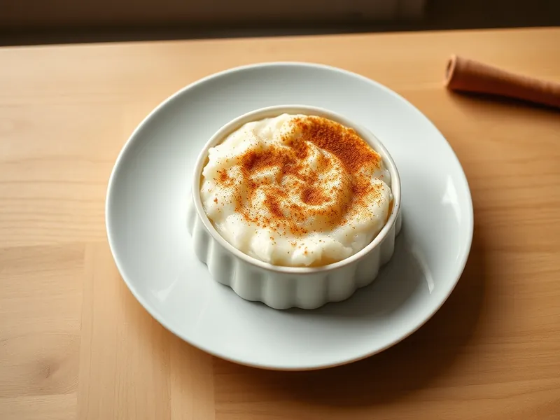

Сютлач - турецкий рисовый пудинг
Молочный рисовый пудинг с запечённой карамельной корочкой и корицей
190 мин4 порц.311 ккал на порциюБ 7 · Ж 5 · У 59Средиземноморская кухня
Открыть в приложении: порции, таймеры, список покупок
Продукты на 4 порц.
- Рис80 г
- Вода300 мл
- Молоко800 мл
- Сахар100 г
- Рисовая мука2 ст. л.
- Ванильный сахар1 шт
- Корица0,5 ч. л.
Как готовить
- Промойте рис, залейте водой и варите на среднем огне 15 минут, пока вода почти не впитается.
- Влейте 700 мл молока, добавьте сахар и ванильный сахар и варите на слабом огне 15 минут, помешивая, до мягкости риса.
- Разведите рисовую муку в оставшемся холодном молоке, влейте в кастрюлю и варите ещё 5 минут, помешивая, до густоты жидкой сметаны.
- Разлейте пудинг по жаропрочным формочкам и поставьте их на противень с холодной водой.
- Запекайте под верхним нагревом при 200 °C (сильный жар) 15-20 минут, пока на поверхности не появятся коричневые пятна.
- Остудите пудинг 30 минут, уберите в холодильник на 2 часа и посыпьте корицей перед подачей.
Совет. Вода в противне не даёт пудингу закипеть и расслоиться, а корочка при этом успевает подрумяниться.